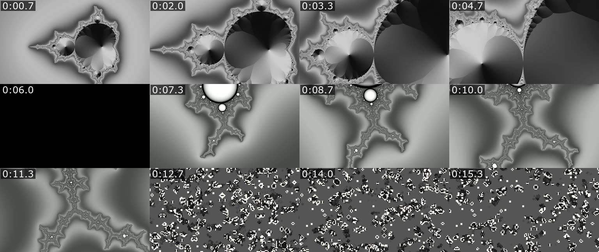

openmode
Open source · CLI and MCP server · MIT
Video editing and rendering for coding agents.

Video: 16s, 1920x1080, 30 fps, h264, 15.6 MB
Silences: 5-7s
Black: 5-6.5s
openmode.ai
look · render · versions